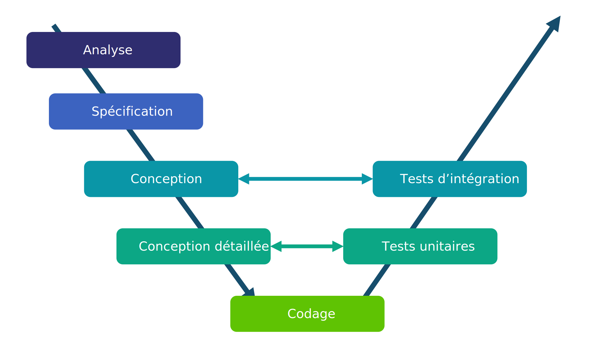
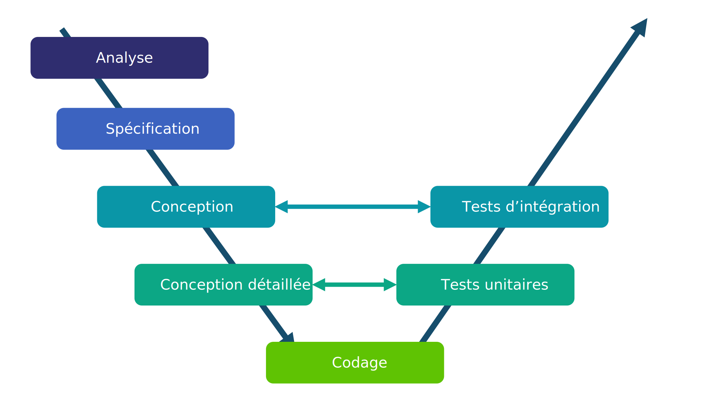

Qualité de développement
Diagramme UML de séquence
2A - Bachelor Universitaire de Technologie
IUT d'Orsay - Université Paris-Saclay - 2024/2025
IUT d'Orsay - Université Paris-Saclay - 2024/2025

Cycle de développement

 



Ce cours se positionne dans les étapes Spécification et Conception.
Définitions
-
Les diagrammes de séquence ont été introduits pour permettre de décrire
les scénarios de communications entre objets.- décrire les messages échangés pour la réalisation d'une fonctionnalité.
- identifier les liens et les méthodes nécessaires pour les objets.

-
Un diagramme de séquence représente :
- les entités (objets/acteurs) verticalement
par des lignes de vie - les messages horizontalement par des flèches
- les entités (objets/acteurs) verticalement
Les entités
- Un diagramme de séquence décrit des interactions entre deux entités principales :
- un acteur $\to$ une entité extérieur au système
- un objet $\to$ une entité du système
-
Chaque entité a une ligne de vie représentée par une ligne verticale
- en pointillée lorsque l'entité est inactive
- en bloc lorsque l'entité est active

Les messages
- Un diagramme de séquence permet de spécifier différents types de communications :
- création d'un objet
- appels de méthodes
- envoi d'un signal
- destruction d'un objet ...

Les messages
- Un diagramme de séquence utilise
trois types de messages pour spécifier
une communication :- message synchrone :
l'entité attend la réponse avant de continuer - message de retour :
la réponse d'une entité à un message - message asynchrone :
l'entité n'attend pas la réponse pour continuer
- message synchrone :

Exemple

Les fragments combinés
- Dans un diagramme de séquence, il est possible :
- de représenter des contraintes ou des propriétés
particulières
(exécution atomique, répétition, ...). - de décomposer une interaction complexe en fragments simples.
- de représenter des contraintes ou des propriétés
particulières
-
Le fragment combiné est l'élément graphique permettant
de représenter ce type d'information.
Les fragments combinés
- Un fragment combiné est constitué de :
- un opérateur d'interaction
(type de la combinaison) - un ou plusieurs fragments d'interaction
(une partie du diagramme)
- un opérateur d'interaction
-
L'opérateur d'interaction est indiqué
dans le coin supérieur gauche
dans un rectangle.

Les fragments combinés
Alternative
Alternative - alt :
sélectionner un comportement en fonction d'une condition.
sélectionner un comportement en fonction d'une condition.

Les fragments combinés
Option
Option - opt :
exécuter un comportement si la condition de garde est vérifiée.
exécuter un comportement si la condition de garde est vérifiée.

Les fragments combinés
Boucle
Boucle - loop :
exécuter une interaction tant qu'une condition est satisfaite.
exécuter une interaction tant qu'une condition est satisfaite.

Les fragments combinés
Rupture
Rupture - break :
exécuter le fragment associé puis mettre fin
à l'interaction englobante.
exécuter le fragment associé puis mettre fin
à l'interaction englobante.

Les fragments combinés
Parallèle
Parallèle - par :
les fragments d'interaction associés sont exécutés en parallèle.
les fragments d'interaction associés sont exécutés en parallèle.

Les fragments combinés
Quelques opérateurs supplémentaires
- ref : appeler une interaction décrite par ailleurs.
- strict : l'ordre d'exécution doit être strictement respecté.
- weak : l'ordre d'exécution des opérations n'a pas d'importance.
- ignore : certains messages peuvent être absents sans incidence.
- consider : certains messages doivent être obligatoirement présents.
- critical : une séquence d'interactions ne peut être interrompue
(séquence critique est atomique).
En complément
du diagramme de cas d'utilisation
Spécification
- à la place de la description textuelle ou du diagramme d'activité
décrivant les scénarios du diagramme de cas d'utilisation. - pour décrire les flux d'informations échangés
pour la réalisation
d'un cas d'utilisation.
En complément
du diagramme de cas d'utilisation
Exemple

En complément
du diagramme de cas d'utilisation
Exemple

En complément
du diagramme de classe
Conception
- identifier les liens entre les objets (les classes).
- identifier les méthodes nécessaires pour les objets (les classes).
En complément
du diagramme de classe
Exemple
En complément
du diagramme de classe
Exemple